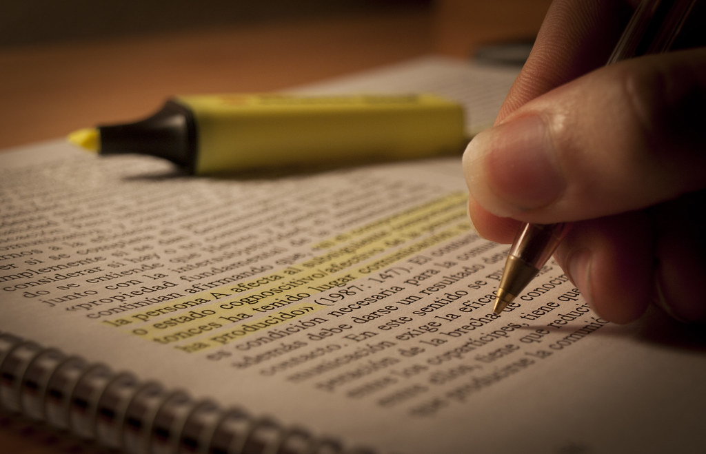
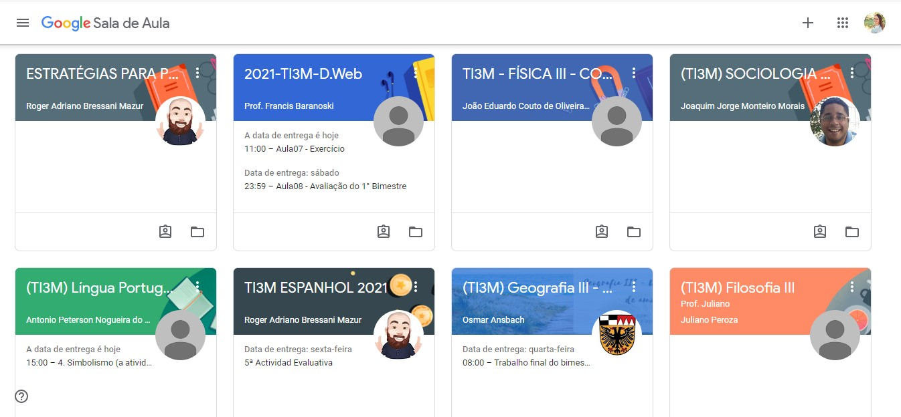
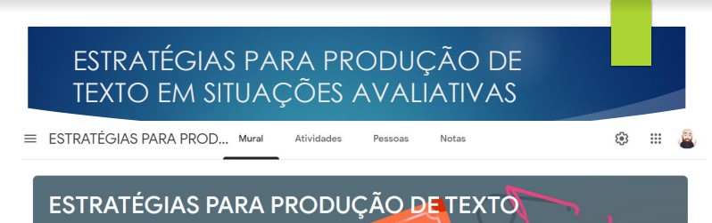

Meu Hobbie
Meu maior hobbie é estudar, passo muitas horas dos meus dias estudando. Mas para que eu consiga dar conta de tudo, eu sempre me organizo primeiro, acredito que organização seja outro hobbie.
Passo muitas horas estudando e gosto muito, acredito que com certeza é algo benéfico para minha pessoa. Gosto de me aprofundar em assuntos e conhecer coisas novas, com isso, sempre que posso compro cursos de coisas que gosto.
Passar horas, e gostar faz parte do processo, mas, eu acredito que a principal ferramenta para minha aprendizagem seja escrever, escrever conceitos e detalhes sobre o conteúdo faz com que eu fixe mais, se eu apenas ouvir e não anotar eu não lembrarei quando precisar.

Coisas que tenho para estudar:
- Matérias do IF
- Curso de ASB
- Projeto IC-Unicentro
- Oficina de Estratégias para Produção de Textos
Lista de prioridades:
- Matérias IF
- Oficina de Estratégias para Produção de Textos
- Projeto IC-Unicentro
- Curso de ASB
Como me organizo:
- Matérias IF
- Minha prioridade, de manhã assisto às aulas e alguns dias a tarde me dedico a aprofundar os conteúdos e as atividades do classroom.

- Oficina de Estratégias para Produção de Textos
- Às quartas-feiras a noite assisto à oficina, e na quinta pratico a escrita.

- Projeto IC-Unicentro
- Normalmente na segunda-feira leio os textos sugeridos e faço meus fichamentos para encaminhar a responsável pelo projeto.

- Curso de ASB
- De segunda a sexta, exceto quarta-feira, começo assistir as aulas as 19h, anoto todo conteúdo e faço as provas.